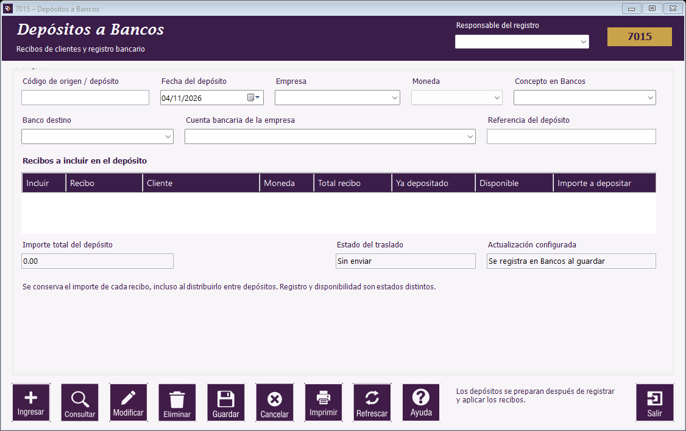

|   |
| |
Guía de Movimientos de clientes | Estado de cuenta | Cargos y ajustes | Recepción de pagos | Depósitos a Bancos | Consulta de recibos | Botones de Movimientos de clientes | Mensajes frecuentes de Movimientos de clientes

Ubicación de los campos y del botón Ayuda en el formulario.
El envío actual registra un ingreso en el módulo interno de Bancos y admite GTQ. El estado ENVIADO indica ese registro; no confirma una transferencia o un depósito realizado por un banco real. La conciliación corresponde a Bancos.
Puede distribuir un recibo entre depósitos, respetando su saldo disponible. Un recibo incluido en un depósito requiere coordinar su cambio o reverso con Bancos.